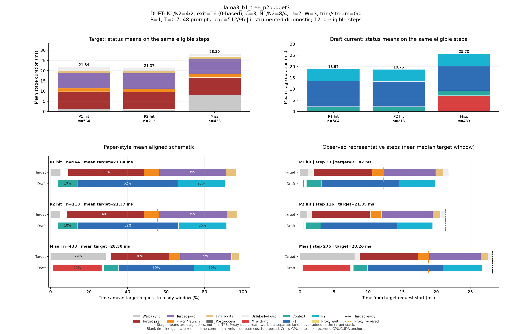

DUET: K1/K2=4/2, exit=16 (0-based), C=3, N1/N2=8/4, U=2, W=3, trim/stream=0/0
| Pass | 용도 | N | B | T | Seed | AL* | Cache hit | TPS* | Raw TPS |
|---|---|---|---|---|---|---|---|---|---|
| 0 | profile-diagnostic | 48 | 1 | 0.7 | 5100 | 2.650 | 64.13% | 90.87 | 90.80 |
Input/output cap: 512/96 · GPUs: 4,5 · draft seed: 0 · source: 81ea7775bbda8fed1e0edc00a612ee3d8bb3f3ae
PNG · 벡터 PDF · 원본 결과 JSON
세부 trace: 1210 eligible steps. Target 원본 · Draft 원본
제외 수: {"initial": 19, "output_boundary": 48, "capture_or_next": 11}
왼쪽 아래는 상태별 평균 정렬 schematic, 오른쪽 아래는 실제 대표 step입니다. %의 분모는 각 상태의 평균 target request→ready 시간이며 phase overlap은 별도 lane에 표시합니다.

{
"args": {
"target": "/data/chokwans99/models/layerskip-llama3-8B",
"draft": "/home/chokwans99/models_mlsys/Qwama-0.5B-Instruct",
"mode": "duet-tree",
"batches": [
1
],
"temperatures": [
0.7
],
"seeds": [
5100
],
"target_tp": 1,
"prompts": "/home/chokwans99/PSD-mlsys-coverage/results/mlsys_coverage/round5/tuning48.json",
"limit": 0,
"max_new_tokens": 96,
"max_model_len": 2048,
"input_cap": 512,
"k1": 4,
"k2": 2,
"draft_fan_out": 2,
"proxy_fan_out": 1,
"p1_tree": true,
"p1_verify_nodes": null,
"p2_verify_nodes": null,
"exit_layer": 16,
"p1_nodes": 8,
"p2_nodes": 4,
"tree_width": 3,
"p1_roots": 2,
"p2_budget": 3,
"tree_root_count": null,
"tree_beta": 0.5,
"tree_proxy_threshold": 0.01,
"tree_conf_threshold": 0.03,
"root_source": "complement",
"root_normalization": "full",
"root_overlap_mix": 0.25,
"memory_fraction": 0.45,
"ignore_eos": false,
"greedy_only": false,
"audit_preemption": false,
"ragged_limits": false,
"tree_calibration_dir": null,
"preflight_test": null,
"output": "/home/chokwans99/PSD-mlsys-coverage/results/mlsys_coverage/round5/llama3_b1_tree/llama3_b1_tree_p2budget3.json"
},
"engine_kwargs": {
"num_gpus": 2,
"max_num_seqs": 1,
"max_model_len": 2048,
"max_num_batched_tokens": 2048,
"gpu_memory_utilization": 0.45,
"speculate": true,
"draft_async": true,
"greedy_only": false,
"jit_speculate": true,
"speculate_k": 6,
"async_fan_out": 3,
"duet_p1_tree_policy": "on",
"duet_p2_tree_policy": "on",
"draft": "/home/chokwans99/models_mlsys/Qwama-0.5B-Instruct",
"duet_enabled": true,
"duet_exit_layer": 16,
"duet_phase1_k": 4,
"duet_phase2_k": 2,
"duet_draft_fan_out": 2,
"duet_p2_tree_max_nodes": 4,
"duet_p2_tree_verify_nodes": 4,
"duet_p1_tree_max_nodes": 8,
"duet_p1_tree_verify_nodes": 8,
"duet_tree_c_tensor": 3,
"duet_p1_roots_per_position": 2,
"duet_p2_budget": 3,
"duet_tree_root_count": null,
"duet_tree_beta": 0.5,
"duet_tree_proxy_threshold": 0.01,
"duet_tree_conf_threshold": 0.03,
"duet_root_source": "complement",
"duet_root_normalization": "full",
"duet_root_overlap_mix": 0.25
},
"env": {
"CUDA_VISIBLE_DEVICES": "4,5",
"SSD_CUDA_ARCH": "8.9",
"SSD_ATTN_BACKEND": "auto",
"SSD_DIST_PORT": "30808",
"OMP_NUM_THREADS": "4",
"SSD_SEED": "0",
"SSD_CHAIN_PROXY_GRAPH": "1",
"SSD_FAST_VERIFY": "1",
"SSD_BATCHED_PROXY_GRAPH": "1",
"SSD_DUET_EXIT_REPLICA": "0",
"SSD_ASYNC_PROXY_SEND": "1",
"SSD_PROXY_STREAM": "0",
"SSD_BATCHED_TREE": "1",
"SSD_TREE_EXPANSION_POLICY": "reach_gain_frontier",
"SSD_TREE_REACH_CALIBRATION": "/home/chokwans99/PSD-mlsys-coverage/results/mlsys_coverage/round4/calibration/reach.json",
"SSD_TREE_GAIN_CALIBRATION": "/home/chokwans99/PSD-mlsys-coverage/results/mlsys_coverage/round4/calibration/gain.json",
"SSD_DUET_MISS_K": "4",
"SSD_TREE_FUSED_MATH": "1",
"SSD_BATCH_TREE_BULK_EXPORT": "1",
"SSD_TREE_PARALLEL_INSERT": "0",
"SSD_PROFILE_DUET": "1",
"SSD_PROFILE_DUET_MAX_EVENTS": "100000",
"SSD_TREE_SHAPE_METRICS": "1",
"SSD_PROFILE_DIR": "/home/chokwans99/PSD-mlsys-coverage/results/mlsys_coverage/round5/profiles/llama3_b1_tree_p2budget3",
"SSD_HF_CACHE": "/data/chokwans99/models",
"SSD_DATASET_DIR": "/home/chokwans99/PSD-mlsys-coverage/results/mlsys_coverage/round5"
},
"effective_features": {
"fast_verify": true,
"batched_proxy_graph": true,
"exit_replica": false,
"jit_speculate": true,
"duet_jit_short": true,
"miss_depth": 4,
"miss_width": 1,
"tree_fused_math": true,
"tree_parallel_insert": false,
"bulk_export": true
},
"resolved_env": {
"SSD_CUDA_ARCH": "8.9",
"SSD_ATTN_BACKEND": "auto",
"SSD_DIST_PORT": "30808",
"SSD_SEED": "0",
"SSD_CHAIN_PROXY_GRAPH": "1",
"SSD_FAST_VERIFY": "1",
"SSD_BATCHED_PROXY_GRAPH": "1",
"SSD_DUET_EXIT_REPLICA": "0",
"SSD_ASYNC_PROXY_SEND": "1",
"SSD_PROXY_STREAM": "0",
"SSD_BATCHED_TREE": "1",
"SSD_TREE_EXPANSION_POLICY": "reach_gain_frontier",
"SSD_TREE_REACH_CALIBRATION": "/home/chokwans99/PSD-mlsys-coverage/results/mlsys_coverage/round4/calibration/reach.json",
"SSD_TREE_GAIN_CALIBRATION": "/home/chokwans99/PSD-mlsys-coverage/results/mlsys_coverage/round4/calibration/gain.json",
"SSD_DUET_MISS_K": "4",
"SSD_TREE_FUSED_MATH": "1",
"SSD_BATCH_TREE_BULK_EXPORT": "1",
"SSD_TREE_PARALLEL_INSERT": "0",
"SSD_PROFILE_DUET": "1",
"SSD_PROFILE_DUET_MAX_EVENTS": "100000",
"SSD_TREE_SHAPE_METRICS": "1",
"SSD_PROFILE_DIR": "/home/chokwans99/PSD-mlsys-coverage/results/mlsys_coverage/round5/profiles/llama3_b1_tree_p2budget3",
"SSD_HF_CACHE": "/data/chokwans99/models",
"SSD_DATASET_DIR": "/home/chokwans99/PSD-mlsys-coverage/results/mlsys_coverage/round5",
"SSD_FORCE_SPLIT_K1K2": "1",
"SSD_DUET_JIT_SHORT": "1",
"SSD_SHM_NAME": "ssd_2586338"
},
"runtime_source_sha256": {
"ssd/ssd/__init__.py": "f1a221b38f55b42ef0619cba48a411acbbd1965c4845b4643f77443b7ce77950",
"ssd/ssd/config.py": "865ddb5e09ec11f4bc8511dad3f5abad39a6ab412cf0bbcd6213179b5245fa31",
"ssd/ssd/engine/block_manager.py": "05d873619b419d31f47b4be4025bc7c9f11759f5f0bc3f65fbff3a1e8f94660a",
"ssd/ssd/engine/draft_runner.py": "8cb7e22f725de2c0d9c85912ae04f88f1674f34c0cee4b5beccc9a3b5be1c174",
"ssd/ssd/engine/helpers/batch_tree_common.py": "739feeb975c20d0adbdae51735b8983aa6cae8b59d6237b285db0c766d558f27",
"ssd/ssd/engine/helpers/batch_tree_draft.py": "f361030685350183884cc55b9058945515bb00da53fc86541f7902bfd2138528",
"ssd/ssd/engine/helpers/batch_tree_forward.py": "0c6079d2bdbf7ecc000b2a98b94b49b1942939d34ada80b15f57510de8a20940",
"ssd/ssd/engine/helpers/batch_tree_inputs.py": "c0a05d13ba0e63ecbc920425ddd6a98dc60001d93d73085e75d2d4a9b110a066",
"ssd/ssd/engine/helpers/batch_tree_roots.py": "ad3c4e772392c1043284ac4912d606543f3fd76167135b73e4f72a700e6820c7",
"ssd/ssd/engine/helpers/batch_tree_sampling.py": "46f36658cb189bc080ae0d4b8561f84662290facacccf6600f129eb6e93ee66b",
"ssd/ssd/engine/helpers/batch_tree_verify.py": "2da945efe3ba4b2673377a2f5c497528ab0c6cf4d7fd7edfbdb23b6c9c619ede",
"ssd/ssd/engine/helpers/batched_proxy.py": "6ed4f9b85ff8cf9c24b7ad43a1b7377d08123eeef5307366a373dacda184da86",
"ssd/ssd/engine/helpers/batched_tree_executor.py": "098d64cad2d20d96091631f6bc91da73b1e893ec400c3431a4ed68d007a9ef45",
"ssd/ssd/engine/helpers/cudagraph_helpers.py": "0436aec61d05d0b79696a48665042e364f3f4c50d853b68dc424e435b54be0c9",
"ssd/ssd/engine/helpers/e0_trace.py": "23ecd9bce2587cbef3f99c8894964c0d9642d33d372bd7be4954a5a2840a142e",
"ssd/ssd/engine/helpers/mask_helpers.py": "8ada4e709a6ab310ee920a7176b3684f89860022fc659442f6cb02ed5fb87d88",
"ssd/ssd/engine/helpers/p1_tree.py": "f48ae6b01e593d2598262b34007a6b58dde9e57e94138dde62f81d5526637398",
"ssd/ssd/engine/helpers/p2_tree.py": "73b0a512d834ab3a4608d9cd898b13b32630dd3b914b49e753c1116ac0640b41",
"ssd/ssd/engine/helpers/p2_tree_executor.py": "cfb04f959fd08baf3819a688a907cac4e3071a2727085ea08ca089b50a21e82e",
"ssd/ssd/engine/helpers/packed_tree_forward.py": "b903d6fe4d1fe18f95f6540f488acf40d469154100239429256eace61b1d7e76",
"ssd/ssd/engine/helpers/packed_verify.py": "a50ff24e93324840783b60102bfaeb3786711f05f64bd897708c779535c1820f",
"ssd/ssd/engine/helpers/root_policy.py": "5e3a8e2f9b2fe43fec52eb9e80fe59cb0d28177122f7e75c823c5ffd20aee718",
"ssd/ssd/engine/helpers/runner_helpers.py": "bfb570d8e018ee296a6c2a8c3c9e75919fd0eb1beb288ceb80121ad116419bf2",
"ssd/ssd/engine/helpers/speculate_types.py": "2929b5f3a176d04b6a4b01f092b224ad733dfda10a647bb73801cd346441ae91",
"ssd/ssd/engine/helpers/tree_expansion_policy.py": "47f818d1b8f284e56813af294723f6a934c3da0502b9ae4e611b54ba6fb85dac",
"ssd/ssd/engine/helpers/tree_fused_math.py": "930a1215363a3b6f878cbc4a71c3f59293f46aa2eab3c4938e5bb51e95868d2e",
"ssd/ssd/engine/helpers/tree_gain_allocation.py": "6f32c6a7b69272c1b42992d95c546bfd3980ccd71af3b3346e9df61977907b6a",
"ssd/ssd/engine/helpers/tree_host_topology.py": "86d0deab4da2932540a108c4c2b3560b8634837e71ba23783375c2001e4cf81c",
"ssd/ssd/engine/helpers/tree_layout.py": "4e5e47c54a4efd5a30ae8c528e1d2d9493d12aa5605c0e65c2f86ba874805be1",
"ssd/ssd/engine/helpers/tree_rerank_gpu.py": "e4a8bff8828f983d6eb407504f87f2a9edf08a1750449fe46565e661f892b734",
"ssd/ssd/engine/helpers/tree_topology_gpu.py": "3a6cf8796faabbe8adef56deedf8956c1cf252a31e0491f3b71a8544bdcf89af",
"ssd/ssd/engine/llm_engine.py": "b0081876ef6470f91fa562acc0317074a85afa9aec8322182bda7749153db00f",
"ssd/ssd/engine/model_runner.py": "5fa9e910f38538c276a151113fc490be9c75ae9af2bf35ba6eaa5513b237a421",
"ssd/ssd/engine/scheduler.py": "52a36e8bb2abc26f775562a39bd95ea6cc8c70650e6193ddaa0fad762afb8ae4",
"ssd/ssd/engine/sequence.py": "6894715ef142074b118bfa3018b10826d2748518e9c8b71291064eb99fae9bd9",
"ssd/ssd/engine/speculator_async.py": "cd16395d5e5d7380d29f5a27e1495b6a40758c0452ce2cb40d996e2c3271c114",
"ssd/ssd/engine/speculator_sync.py": "30487afa7f5027735ebd752ca1a53003f1d56350f503ea91931ef64e7aab115e",
"ssd/ssd/engine/step.py": "525d3022561c9eee96ec076032bb27e281af744feb739ddc17e52344a9cafe8f",
"ssd/ssd/engine/verifier.py": "f6795547f278628312d2dd5ab0a28e9f34489b8e6d02038566a65fa3190a0928",
"ssd/ssd/layers/activation.py": "13d88b460e7610df28c6a7c719dd8bf21c5c59ae0f85c94d505d499215618a82",
"ssd/ssd/layers/attention.py": "bbafa69d9b52dedf81542f2c3227b7f061de11c679a6681a16b0c137ccfc672b",
"ssd/ssd/layers/embed_head.py": "b896a56b908d75c8f30462b0b1a4ce634276ddb41165fdaa0220c55a2ddf7257",
"ssd/ssd/layers/fi_attn.py": "4b0a275d020c1c3ce37f4e2a6c04bff12577d6f11feec7d79959652300fc9a0c",
"ssd/ssd/layers/layernorm.py": "a076c8d2e31d2597119d8504a69afd8711b41a29b5ccb7e1bf111a6c7277400e",
"ssd/ssd/layers/linear.py": "82c096262013516c5f0a43f7c28f23aa6db6b14f52cbe1ce1dacc5f9d5c4b0b6",
"ssd/ssd/layers/rotary_embedding.py": "1bcca21cf5e4d81c11a5c55d59a6033874c4e6a0003cc4ae8e1aa6165976a723",
"ssd/ssd/layers/sampler.py": "df22591a229ae5c2f62d4797707470ebccb8e55f7064577bc24a656ed797f213",
"ssd/ssd/llm.py": "496950f31428f674b70e8e137e029aa16dd82fdc8d8b8cc76f9ebdce86f7f653",
"ssd/ssd/models/eagle3_draft_llama3.py": "0d6e713a419cf884fc85984f9a2a6de520119032075a7c99158e0df7e2faca84",
"ssd/ssd/models/llama3.py": "ac801bd73e999f04a6fc862ca1d49bc94c88315456cfb6cb1215a503bcc5e07d",
"ssd/ssd/models/qwen2.py": "6804e3662a173368632e5f05b9893cc0cd28a61ac9bd25dbe8cd6f387ca0d1ca",
"ssd/ssd/models/qwen3.py": "535495bf69933fd9c677275453b801189e2c3c78a94fcc5133fc65b88c9f69c7",
"ssd/ssd/paths.py": "72c52420daaf6d457c60235617efc3f8b1e3ae208a35f3bc45438adc9d7e01ac",
"ssd/ssd/quant/__init__.py": "a69f0de0a516ba2bf9e13680b75b8f5d538c2eb281b095662ed1515f8b0f8698",
"ssd/ssd/quant/adapter.py": "fbb1ce4a198a585c31b0102555d1f84d18b09b0de1b90a5808d93ec8ff7ac271",
"ssd/ssd/quant/awq_calibrate.py": "116807eca0a3e4e001aa24a3344031416e4060a6c1b2e39f59829fba09484126",
"ssd/ssd/quant/build.py": "37f9c72ac69af213f2720c86faf380b8a46baaad0b98bf5f2e3c7fa9b3fbc43c",
"ssd/ssd/quant/config.py": "080c327b2297d0905f8fddc8d994aa7b9dc1086d7703d951471d48cea8723a1d",
"ssd/ssd/quant/importer.py": "c8990b69bc9e4e152e7e80b7f08f273c6a4652c1f7e95a8247f85e50030f4f92",
"ssd/ssd/quant/init_context.py": "6aa3dc3f6e95d8902fa7244d0010110b6fcf1ffdccedd6eaa389204339fc214f",
"ssd/ssd/quant/io.py": "f44f98a57351ff1063b7423d2f8390a565a30796fd6c3beaeaa8825f906e66b5",
"ssd/ssd/quant/loader.py": "14f901b1f53a3650be7eff497f626469e2b1fbc487202c639d33c8dd4c9047fb",
"ssd/ssd/quant/marlin.py": "4f1996e9f63d7109e92a3a7ec5350069ba67d7659f2149e99b84ca3c6626b241",
"ssd/ssd/quant/marlin_utils.py": "f64ec8d7ec8260556abd21e229567971a928882f14b93d288a6732d55c12fc90",
"ssd/ssd/quant/naming.py": "7ba73900af5e6d6fa2d1907bd2611625fc72f28a1fb9ea4834cd9a45901632d6",
"ssd/ssd/quant/pack.py": "b7dd683b7cdbfbb6f4ce1e13a51a72240a8dc3a35b7ed652dc664d26bb384711",
"ssd/ssd/quant/state.py": "82cb1050a3b1776765df7ad8f6c59c23a86ac8d1d4cc3c974cded7f8e762f806",
"ssd/ssd/sampling_params.py": "7f79868c4ca115bb18e017411a6c5545f354aa858aa0b8076aafb756d0785032",
"ssd/ssd/utils/async_helpers/async_spec_helpers.py": "0d70779098c5051fcba5d3add5ff0b7896139f1b7789babe701a8df6eaa40f24",
"ssd/ssd/utils/async_helpers/duet_policy.py": "1fb3e1ec1c41a9cda5f531f8c732b09145c7d87ea79d74c331b8176f11f22aaf",
"ssd/ssd/utils/async_helpers/nccl_pack.py": "6330e785f3e81acffe25a82061d3098f7834ad3c2d07bb071d79ed9923b18dc1",
"ssd/ssd/utils/async_helpers/tests.py": "6491ced36a2a6f06d8cf411204b1190d2ca0bc700cd0becf79c3f4cd8abcd87e",
"ssd/ssd/utils/context.py": "ce55eb45f00c91412946dd1c96f5c8f972372dd4c8069770c48e120773f301fc",
"ssd/ssd/utils/int8_debug.py": "9a71dbf2b997a9c8d9b776cc3659c8dbf32ce5411eb5cedb4a73368cee60d3d7",
"ssd/ssd/utils/loader.py": "c008eac34810772e8d9f51da896c00867481f3e1a0e6f725e0d06599c0aab59e",
"ssd/ssd/utils/misc.py": "1084b630f174d651b78b01c4ba2dff147f18d3cf52a200704b4b9eab2b72b66c",
"ssd/ssd/utils/quantize.py": "c0ee73d55f3781eba88007325d5e9e53e66ad952e0e8f19143aa8c50bc39f406",
"ssd/ssd/utils/verify.py": "0cf11b9ba19a73e9c39087fccde43071464c6f3b964e00081ebadc747ef142a4",
"ssd/ssd/utils/verify_fast.py": "23b05b7e5032fe72c8f2ef5bd7a69aa874818b08b52ea7fc0344a54c76ea28d9",
"ssd/bench/mlsys_campaign.py": "059b6316ba33e867e1fcf099a8180c186fa70b916692eca386d2a4a347b0f26f",
"ssd/bench/mlsys_coverage.py": "70b2afaf05bbbd5760c2a4f96f801976479209ca1d7a8f9eb8598139e686bdbc",
"ssd/bench/mlsys_greedy_audit.py": "b9815fd03ded7f30f7c0408629782156e73f5ceaab9f0b3b720956f5c00da141",
"ssd/bench/mlsys_preemption_audit.py": "f891ff5a69a59fb8c93e7952f9d48ac16adb7fef074763089f14d4505ecad80d",
"ssd/bench/mlsys_summarize.py": "0235aa2b56eb59c41c429351d77e90e16c52ccdf58c43e3578dd03df0f6095bd",
"ssd/bench/mlsys_tree_observer.py": "8c18248c9ef1953e2e821613099f14d155978540536939288d4fb2aa897c6263",
"ssd/bench/mlsys_verify_bench.py": "3ddc36197874d239f41a1c135570d4d7a0940d615d3d396299bae46e377bce2e"
}
}{
"groups": [
{
"status": "P1 hit",
"n": 564,
"mean_target_ms": 21.838226519155164,
"mean_decode_ms": 21.88201494108727,
"mean_intervals": [
{
"lane": "Draft current",
"label": "Context",
"start": 0.8061339821375854,
"end": 3.0175138644292847
},
{
"lane": "Draft current",
"label": "Miss draft",
"start": 0.3528972826105483,
"end": 0.39338828189998654
},
{
"lane": "Draft current",
"label": "P1",
"start": 3.038260611659246,
"end": 14.400094363283603
},
{
"lane": "Draft current",
"label": "P2",
"start": 14.405297491567355,
"end": 19.75673704663067
},
{
"lane": "Draft current",
"label": "Proxy wait",
"start": 14.401850109827434,
"end": 14.403569455265153
},
{
"lane": "Target",
"label": "Final logits",
"start": 19.919714087712848,
"end": 21.036571734763207
},
{
"lane": "Target",
"label": "Postprocess",
"start": 21.819013864436048,
"end": 21.838226519155164
},
{
"lane": "Target",
"label": "Proxy / launch",
"start": 10.613831833321997,
"end": 12.31724515451607
},
{
"lane": "Target",
"label": "Target post",
"start": 12.319032923126898,
"end": 19.91778952559681
},
{
"lane": "Target",
"label": "Target pre",
"start": 1.9867592331365491,
"end": 10.61203282014698
},
{
"lane": "Target",
"label": "Wait / sync",
"start": 0.0,
"end": 1.1153867265856858
}
],
"components": [
{
"lane": "Draft current",
"label": "Context",
"mean_ms": 2.2113798822916992,
"present_steps": 564,
"population": 564
},
{
"lane": "Draft current",
"label": "Miss draft",
"mean_ms": 0.04049099928943824,
"present_steps": 564,
"population": 564
},
{
"lane": "Draft current",
"label": "P1",
"mean_ms": 11.361833751624358,
"present_steps": 564,
"population": 564
},
{
"lane": "Draft current",
"label": "P2",
"mean_ms": 5.351439555063315,
"present_steps": 564,
"population": 564
},
{
"lane": "Draft current",
"label": "Proxy wait",
"mean_ms": 0.0017193454377194667,
"present_steps": 564,
"population": 564
},
{
"lane": "Target",
"label": "Final logits",
"mean_ms": 1.116857647050357,
"present_steps": 564,
"population": 564
},
{
"lane": "Target",
"label": "Postprocess",
"mean_ms": 0.019212654719115995,
"present_steps": 564,
"population": 564
},
{
"lane": "Target",
"label": "Proxy / launch",
"mean_ms": 1.7034133211940738,
"present_steps": 564,
"population": 564
},
{
"lane": "Target",
"label": "Target post",
"mean_ms": 7.598756602469911,
"present_steps": 564,
"population": 564
},
{
"lane": "Target",
"label": "Target pre",
"mean_ms": 8.625273587010431,
"present_steps": 564,
"population": 564
},
{
"lane": "Target",
"label": "Unlabelled gap",
"mean_ms": 1.6593259801255895,
"present_steps": 564,
"population": 564
},
{
"lane": "Target",
"label": "Wait / sync",
"mean_ms": 1.1153867265856858,
"present_steps": 564,
"population": 564
}
],
"mean_markers": {
"Final logits": 21.036571734763207,
"Target ready": 21.838226519155164,
"Proxy received": 12.173120623784708
},
"representative": {
"step_id": 33,
"status": "P1 hit",
"target_ms": 21.86865210533142,
"decode_ms": 21.914361976087093,
"source_counts": {
"1": 1
},
"physical_queries": 9,
"max_valid_nodes": 8,
"unlabelled_target_ms": 1.693847417831421,
"intervals": [
{
"label": "Wait / sync",
"start": 0.0,
"end": 1.127929925918579,
"lane": "Target",
"original_label": "target_spec_wait"
},
{
"label": "Target pre",
"start": 1.9887690544128418,
"end": 10.601562023162842,
"lane": "Target",
"original_label": "batch_target_pre"
},
{
"label": "Proxy / launch",
"start": 10.603515148162842,
"end": 12.311522960662842,
"lane": "Target",
"original_label": "batch_target_proxy"
},
{
"label": "Target post",
"start": 12.313476085662842,
"end": 19.90478491783142,
"lane": "Target",
"original_label": "batch_target_post"
},
{
"label": "Final logits",
"start": 19.90673804283142,
"end": 21.02490210533142,
"lane": "Target",
"original_label": "batch_target_final_logits"
},
{
"label": "Postprocess",
"start": 21.85205101966858,
"end": 21.86865210533142,
"lane": "Target",
"original_label": "target_postprocess"
},
{
"label": "Unlabelled gap",
"start": 1.127929925918579,
"end": 1.9887690544128418,
"lane": "Target",
"original_label": "derived_gap"
},
{
"label": "Unlabelled gap",
"start": 10.601562023162842,
"end": 10.603515148162842,
"lane": "Target",
"original_label": "derived_gap"
},
{
"label": "Unlabelled gap",
"start": 12.311522960662842,
"end": 12.313476085662842,
"lane": "Target",
"original_label": "derived_gap"
},
{
"label": "Unlabelled gap",
"start": 19.90478491783142,
"end": 19.90673804283142,
"lane": "Target",
"original_label": "derived_gap"
},
{
"label": "Unlabelled gap",
"start": 21.02490210533142,
"end": 21.85205101966858,
"lane": "Target",
"original_label": "derived_gap"
},
{
"label": "Miss draft",
"start": 0.48961305618286133,
"end": 0.5296521186828613,
"lane": "Draft current",
"original_label": "batch_miss_draft"
},
{
"label": "Context",
"start": 0.9359021186828613,
"end": 3.1028940677642822,
"lane": "Draft current",
"original_label": "batch_glue"
},
{
"label": "P1",
"start": 3.1234021186828613,
"end": 14.48863697052002,
"lane": "Draft current",
"original_label": "batch_p1_total"
},
{
"label": "Proxy wait",
"start": 14.49059009552002,
"end": 14.493031024932861,
"lane": "Draft current",
"original_label": "batch_proxy_wait"
},
{
"label": "P2",
"start": 14.49400806427002,
"end": 19.831897974014282,
"lane": "Draft current",
"original_label": "batch_p2_total"
}
],
"previous": [],
"markers": {
"Target ready": 21.86865210533142,
"Final logits": 21.02490210533142,
"Proxy received": 12.28209400177002
}
},
"step_ids": [
24,
26,
29,
31,
33,
34,
35,
36,
39,
40,
44,
49,
53,
54,
55,
56,
61,
62,
64,
66,
67,
68,
71,
72,
77,
82,
83,
85,
88,
91,
92,
93,
95,
100,
103,
104,
105,
107,
110,
111,
113,
117,
119,
136,
137,
138,
141,
143,
144,
145,
146,
147,
148,
153,
156,
158,
159,
161,
162,
167,
170,
173,
174,
177,
179,
184,
186,
191,
197,
207,
208,
209,
210,
211,
214,
215,
216,
217,
218,
219,
220,
222,
223,
224,
225,
228,
231,
233,
234,
238,
242,
245,
246,
247,
248,
249,
251,
252,
253,
254,
256,
258,
259,
261,
262,
263,
267,
269,
280,
281,
286,
301,
306,
308,
309,
311,
314,
316,
322,
323,
324,
325,
327,
328,
330,
331,
333,
334,
337,
339,
342,
343,
344,
345,
347,
348,
353,
361,
367,
369,
371,
373,
374,
375,
376,
377,
380,
381,
383,
386,
387,
390,
393,
394,
395,
398,
400,
402,
405,
407,
409,
410,
411,
412,
413,
420,
423,
426,
427,
429,
430,
431,
437,
439,
461,
462,
465,
468,
472,
473,
476,
479,
483,
487,
496,
497,
498,
501,
504,
505,
506,
507,
508,
511,
512,
513,
515,
516,
518,
519,
524,
525,
526,
528,
530,
531,
535,
536,
537,
538,
539,
540,
542,
543,
544,
545,
548,
551,
553,
557,
559,
560,
561,
562,
563,
568,
572,
574,
576,
577,
578,
580,
586,
588,
590,
595,
597,
598,
603,
609,
611,
612,
614,
615,
616,
620,
625,
628,
631,
632,
634,
637,
640,
643,
644,
645,
647,
648,
649,
654,
659,
660,
662,
665,
666,
667,
668,
669,
670,
671,
672,
674,
675,
676,
677,
678,
679,
680,
681,
682,
686,
689,
690,
692,
693,
698,
699,
700,
701,
702,
705,
707,
708,
709,
710,
711,
713,
717,
723,
726,
729,
730,
732,
734,
743,
744,
746,
748,
752,
753,
754,
755,
756,
758,
763,
764,
768,
776,
781,
783,
786,
787,
788,
791,
792,
796,
799,
802,
803,
804,
805,
807,
811,
813,
816,
817,
818,
820,
821,
823,
824,
826,
829,
830,
832,
833,
834,
835,
837,
840,
841,
842,
843,
844,
850,
854,
855,
856,
857,
859,
860,
862,
865,
866,
868,
872,
873,
876,
877,
879,
880,
881,
882,
886,
887,
889,
890,
896,
897,
898,
899,
900,
901,
902,
903,
905,
906,
907,
908,
909,
910,
911,
912,
915,
919,
920,
921,
924,
927,
929,
930,
933,
934,
936,
938,
939,
943,
945,
947,
948,
953,
955,
958,
959,
960,
961,
962,
963,
964,
966,
967,
968,
969,
971,
973,
976,
977,
978,
980,
985,
987,
988,
990,
991,
992,
993,
994,
995,
997,
999,
1000,
1003,
1005,
1008,
1009,
1010,
1011,
1021,
1026,
1028,
1029,
1030,
1031,
1032,
1040,
1042,
1044,
1045,
1049,
1050,
1051,
1056,
1062,
1067,
1069,
1071,
1072,
1086,
1090,
1093,
1100,
1103,
1105,
1107,
1109,
1112,
1113,
1118,
1122,
1123,
1125,
1126,
1131,
1133,
1143,
1144,
1145,
1147,
1149,
1150,
1153,
1156,
1157,
1159,
1161,
1165,
1167,
1168,
1169,
1170,
1171,
1172,
1177,
1181,
1182,
1184,
1187,
1189,
1190,
1193,
1195,
1196,
1201,
1209,
1210,
1211,
1212,
1213,
1214,
1215,
1216,
1218,
1219,
1220,
1221,
1222,
1223,
1224,
1225,
1226,
1229,
1230,
1231,
1236,
1239,
1246,
1249,
1250,
1251,
1257,
1258,
1259,
1261,
1263,
1264,
1265,
1268,
1269,
1270,
1271,
1272,
1273,
1274,
1275,
1276,
1277,
1278,
1279,
1280,
1281,
1282,
1285,
1286,
1287
],
"query_shapes": {
"9": 523,
"5": 41
}
},
{
"status": "P2 hit",
"n": 213,
"mean_target_ms": 21.374094494071926,
"mean_decode_ms": 21.41909319863703,
"mean_intervals": [
{
"lane": "Draft current",
"label": "Context",
"start": 0.7890490612513582,
"end": 2.9801045449127055
},
{
"lane": "Draft current",
"label": "Miss draft",
"start": 0.34400474521475777,
"end": 0.38466048128728014
},
{
"lane": "Draft current",
"label": "P1",
"start": 3.001091461226414,
"end": 14.184549964089909
},
{
"lane": "Draft current",
"label": "P2",
"start": 14.190017342007776,
"end": 19.518346383538045
},
{
"lane": "Draft current",
"label": "Proxy wait",
"start": 14.18644803902353,
"end": 14.188075651025548
},
{
"lane": "Target",
"label": "Final logits",
"start": 19.54904821333191,
"end": 20.659661082594607
},
{
"lane": "Target",
"label": "Postprocess",
"start": 21.354751208578477,
"end": 21.374094494071926
},
{
"lane": "Target",
"label": "Proxy / launch",
"start": 10.37395464758358,
"end": 12.008667528349468
},
{
"lane": "Target",
"label": "Target post",
"start": 12.010512892629059,
"end": 19.547356420839336
},
{
"lane": "Target",
"label": "Target pre",
"start": 1.80775012544623,
"end": 10.372129908190088
},
{
"lane": "Target",
"label": "Wait / sync",
"start": 0.0,
"end": 1.0426432459567074
}
],
"components": [
{
"lane": "Draft current",
"label": "Context",
"mean_ms": 2.191055483661347,
"present_steps": 213,
"population": 213
},
{
"lane": "Draft current",
"label": "Miss draft",
"mean_ms": 0.040655736072522375,
"present_steps": 213,
"population": 213
},
{
"lane": "Draft current",
"label": "P1",
"mean_ms": 11.183458502863495,
"present_steps": 213,
"population": 213
},
{
"lane": "Draft current",
"label": "P2",
"mean_ms": 5.328329041530269,
"present_steps": 213,
"population": 213
},
{
"lane": "Draft current",
"label": "Proxy wait",
"mean_ms": 0.0016276120020190315,
"present_steps": 213,
"population": 213
},
{
"lane": "Target",
"label": "Final logits",
"mean_ms": 1.1106128692626953,
"present_steps": 213,
"population": 213
},
{
"lane": "Target",
"label": "Postprocess",
"mean_ms": 0.019343285493447746,
"present_steps": 213,
"population": 213
},
{
"lane": "Target",
"label": "Proxy / launch",
"mean_ms": 1.634712880765888,
"present_steps": 213,
"population": 213
},
{
"lane": "Target",
"label": "Target post",
"mean_ms": 7.5368435282102775,
"present_steps": 213,
"population": 213
},
{
"lane": "Target",
"label": "Target pre",
"mean_ms": 8.564379782743856,
"present_steps": 213,
"population": 213
},
{
"lane": "Target",
"label": "Unlabelled gap",
"mean_ms": 1.4655589016390518,
"present_steps": 213,
"population": 213
},
{
"lane": "Target",
"label": "Wait / sync",
"mean_ms": 1.0426432459567074,
"present_steps": 213,
"population": 213
}
],
"mean_markers": {
"Final logits": 20.659661082594607,
"Target ready": 21.374094494071926,
"Proxy received": 11.871997246719863
},
"representative": {
"step_id": 116,
"status": "P2 hit",
"target_ms": 21.353515148162842,
"decode_ms": 21.397429052740335,
"source_counts": {
"2": 1
},
"physical_queries": 5,
"max_valid_nodes": 4,
"unlabelled_target_ms": 1.4384751319885254,
"intervals": [
{
"label": "Wait / sync",
"start": 0.0,
"end": 1.083008050918579,
"lane": "Target",
"original_label": "target_spec_wait"
},
{
"label": "Target pre",
"start": 1.7734370231628418,
"end": 10.316406011581421,
"lane": "Target",
"original_label": "batch_target_pre"
},
{
"label": "Proxy / launch",
"start": 10.318847179412842,
"end": 11.954101085662842,
"lane": "Target",
"original_label": "batch_target_proxy"
},
{
"label": "Target post",
"start": 11.956053972244263,
"end": 19.48144507408142,
"lane": "Target",
"original_label": "batch_target_post"
},
{
"label": "Final logits",
"start": 19.483397960662842,
"end": 20.59326195716858,
"lane": "Target",
"original_label": "batch_target_final_logits"
},
{
"label": "Postprocess",
"start": 21.33496117591858,
"end": 21.353515148162842,
"lane": "Target",
"original_label": "target_postprocess"
},
{
"label": "Unlabelled gap",
"start": 1.083008050918579,
"end": 1.7734370231628418,
"lane": "Target",
"original_label": "derived_gap"
},
{
"label": "Unlabelled gap",
"start": 10.316406011581421,
"end": 10.318847179412842,
"lane": "Target",
"original_label": "derived_gap"
},
{
"label": "Unlabelled gap",
"start": 11.954101085662842,
"end": 11.956053972244263,
"lane": "Target",
"original_label": "derived_gap"
},
{
"label": "Unlabelled gap",
"start": 19.48144507408142,
"end": 19.483397960662842,
"lane": "Target",
"original_label": "derived_gap"
},
{
"label": "Unlabelled gap",
"start": 20.59326195716858,
"end": 21.33496117591858,
"lane": "Target",
"original_label": "derived_gap"
},
{
"label": "Miss draft",
"start": 0.49986696243286133,
"end": 0.5379531383514404,
"lane": "Draft current",
"original_label": "batch_miss_draft"
},
{
"label": "Context",
"start": 0.9217419624328613,
"end": 3.0545551776885986,
"lane": "Draft current",
"original_label": "batch_glue"
},
{
"label": "P1",
"start": 3.0740859508514404,
"end": 14.227406024932861,
"lane": "Draft current",
"original_label": "batch_p1_total"
},
{
"label": "Proxy wait",
"start": 14.229359149932861,
"end": 14.231312036514282,
"lane": "Draft current",
"original_label": "batch_proxy_wait"
},
{
"label": "P2",
"start": 14.23228907585144,
"end": 19.43932008743286,
"lane": "Draft current",
"original_label": "batch_p2_total"
}
],
"previous": [],
"markers": {
"Target ready": 21.353515148162842,
"Final logits": 20.59326195716858,
"Proxy received": 11.91295313835144
}
},
"step_ids": [
20,
22,
23,
28,
30,
32,
42,
45,
46,
47,
48,
51,
57,
59,
60,
70,
75,
76,
86,
87,
96,
97,
102,
114,
115,
116,
118,
124,
130,
131,
133,
140,
142,
149,
152,
155,
166,
168,
175,
181,
192,
212,
213,
226,
227,
230,
232,
240,
243,
255,
257,
270,
273,
279,
288,
296,
298,
304,
305,
307,
315,
332,
336,
341,
356,
357,
360,
362,
365,
379,
382,
385,
388,
391,
408,
415,
418,
421,
425,
438,
444,
455,
460,
463,
464,
471,
482,
486,
488,
500,
502,
503,
541,
547,
550,
558,
565,
579,
589,
594,
607,
608,
610,
621,
624,
629,
630,
636,
646,
661,
664,
673,
688,
697,
704,
716,
720,
725,
727,
731,
733,
735,
739,
745,
747,
750,
751,
767,
770,
771,
785,
789,
794,
812,
815,
822,
825,
831,
838,
851,
852,
869,
870,
875,
878,
892,
893,
904,
916,
925,
926,
937,
940,
941,
946,
952,
957,
970,
972,
996,
998,
1004,
1013,
1022,
1034,
1035,
1037,
1038,
1039,
1041,
1052,
1057,
1058,
1063,
1074,
1075,
1076,
1079,
1082,
1084,
1087,
1091,
1096,
1097,
1110,
1114,
1121,
1130,
1132,
1134,
1138,
1151,
1160,
1164,
1166,
1176,
1186,
1197,
1199,
1200,
1202,
1232,
1235,
1237,
1238,
1240,
1245,
1247,
1248,
1255,
1262,
1283,
1284
],
"query_shapes": {
"5": 213
}
},
{
"status": "Miss",
"n": 433,
"mean_target_ms": 28.298016222740156,
"mean_decode_ms": 28.346429778452247,
"mean_intervals": [
{
"lane": "Draft current",
"label": "Context",
"start": 7.871291522341017,
"end": 9.983632270513452
},
{
"lane": "Draft current",
"label": "Miss draft",
"start": 0.34311554338309835,
"end": 7.483281589820809
},
{
"lane": "Draft current",
"label": "P1",
"start": 9.985910150250442,
"end": 21.092715269423522
},
{
"lane": "Draft current",
"label": "P2",
"start": 21.097992699911632,
"end": 26.435670200726726
},
{
"lane": "Draft current",
"label": "Proxy wait",
"start": 21.094464254709646,
"end": 21.09620870068222
},
{
"lane": "Target",
"label": "Final logits",
"start": 26.57133980821517,
"end": 27.681866153558463
},
{
"lane": "Target",
"label": "Postprocess",
"start": 28.278771387787394,
"end": 28.298016222740156
},
{
"lane": "Target",
"label": "Proxy / launch",
"start": 17.389402581142225,
"end": 19.024892185356546
},
{
"lane": "Target",
"label": "Target post",
"start": 19.026846450691135,
"end": 26.569537789937254
},
{
"lane": "Target",
"label": "Target pre",
"start": 8.815717245634929,
"end": 17.387552089559012
},
{
"lane": "Target",
"label": "Wait / sync",
"start": 0.0,
"end": 8.118337732539716
}
],
"components": [
{
"lane": "Draft current",
"label": "Context",
"mean_ms": 2.112340748172434,
"present_steps": 433,
"population": 433
},
{
"lane": "Draft current",
"label": "Miss draft",
"mean_ms": 7.14016604643771,
"present_steps": 433,
"population": 433
},
{
"lane": "Draft current",
"label": "P1",
"mean_ms": 11.10680511917308,
"present_steps": 433,
"population": 433
},
{
"lane": "Draft current",
"label": "P2",
"mean_ms": 5.3376775008150945,
"present_steps": 433,
"population": 433
},
{
"lane": "Draft current",
"label": "Proxy wait",
"mean_ms": 0.0017444459725747758,
"present_steps": 433,
"population": 433
},
{
"lane": "Target",
"label": "Final logits",
"mean_ms": 1.1105263453432925,
"present_steps": 433,
"population": 433
},
{
"lane": "Target",
"label": "Postprocess",
"mean_ms": 0.01924483495276189,
"present_steps": 433,
"population": 433
},
{
"lane": "Target",
"label": "Proxy / launch",
"mean_ms": 1.6354896042143225,
"present_steps": 433,
"population": 433
},
{
"lane": "Target",
"label": "Target post",
"mean_ms": 7.54269133924612,
"present_steps": 433,
"population": 433
},
{
"lane": "Target",
"label": "Target pre",
"mean_ms": 8.571834843924083,
"present_steps": 433,
"population": 433
},
{
"lane": "Target",
"label": "Unlabelled gap",
"mean_ms": 1.2998915225198582,
"present_steps": 433,
"population": 433
},
{
"lane": "Target",
"label": "Wait / sync",
"mean_ms": 8.118337732539716,
"present_steps": 433,
"population": 433
}
],
"mean_markers": {
"Final logits": 27.681866153558463,
"Target ready": 28.298016222740156,
"Proxy received": 18.885680581901145
},
"representative": {
"step_id": 275,
"status": "Miss",
"target_ms": 28.26074194908142,
"decode_ms": 28.313574148342013,
"source_counts": {
"0": 1
},
"physical_queries": 5,
"max_valid_nodes": 4,
"unlabelled_target_ms": 1.3515620231628418,
"intervals": [
{
"label": "Wait / sync",
"start": 0.0,
"end": 8.009765863418579,
"lane": "Target",
"original_label": "target_spec_wait"
},
{
"label": "Target pre",
"start": 8.736327886581421,
"end": 17.31738305091858,
"lane": "Target",
"original_label": "batch_target_pre"
},
{
"label": "Proxy / launch",
"start": 17.3193359375,
"end": 18.954102039337158,
"lane": "Target",
"original_label": "batch_target_proxy"
},
{
"label": "Target post",
"start": 18.95605492591858,
"end": 26.50976586341858,
"lane": "Target",
"original_label": "batch_target_post"
},
{
"label": "Final logits",
"start": 26.51171898841858,
"end": 27.623046875,
"lane": "Target",
"original_label": "batch_target_final_logits"
},
{
"label": "Postprocess",
"start": 28.242187976837158,
"end": 28.26074194908142,
"lane": "Target",
"original_label": "target_postprocess"
},
{
"label": "Unlabelled gap",
"start": 8.009765863418579,
"end": 8.736327886581421,
"lane": "Target",
"original_label": "derived_gap"
},
{
"label": "Unlabelled gap",
"start": 17.31738305091858,
"end": 17.3193359375,
"lane": "Target",
"original_label": "derived_gap"
},
{
"label": "Unlabelled gap",
"start": 18.954102039337158,
"end": 18.95605492591858,
"lane": "Target",
"original_label": "derived_gap"
},
{
"label": "Unlabelled gap",
"start": 26.50976586341858,
"end": 26.51171898841858,
"lane": "Target",
"original_label": "derived_gap"
},
{
"label": "Unlabelled gap",
"start": 27.623046875,
"end": 28.242187976837158,
"lane": "Target",
"original_label": "derived_gap"
},
{
"label": "Miss draft",
"start": 0.37242603302001953,
"end": 7.40758204460144,
"lane": "Draft current",
"original_label": "batch_miss_draft"
},
{
"label": "Context",
"start": 7.824573993682861,
"end": 9.90855884552002,
"lane": "Draft current",
"original_label": "batch_glue"
},
{
"label": "P1",
"start": 9.91051197052002,
"end": 21.00426197052002,
"lane": "Draft current",
"original_label": "batch_p1_total"
},
{
"label": "Proxy wait",
"start": 21.00621485710144,
"end": 21.00816798210144,
"lane": "Draft current",
"original_label": "batch_proxy_wait"
},
{
"label": "P2",
"start": 21.0091450214386,
"end": 26.76109790802002,
"lane": "Draft current",
"original_label": "batch_p2_total"
}
],
"previous": [],
"markers": {
"Target ready": 28.26074194908142,
"Final logits": 27.623046875,
"Proxy received": 18.87633204460144
}
},
"step_ids": [
21,
25,
27,
38,
41,
43,
50,
52,
58,
63,
65,
69,
73,
74,
78,
79,
81,
84,
89,
90,
94,
98,
99,
101,
106,
108,
109,
112,
120,
122,
123,
126,
127,
128,
129,
132,
134,
135,
139,
150,
151,
154,
157,
160,
164,
165,
169,
171,
172,
176,
178,
180,
182,
183,
185,
187,
188,
189,
190,
193,
194,
205,
206,
221,
229,
236,
237,
239,
241,
244,
250,
260,
266,
268,
272,
274,
275,
276,
277,
278,
282,
283,
284,
285,
287,
289,
290,
291,
292,
293,
294,
295,
297,
299,
300,
302,
303,
310,
312,
313,
318,
319,
320,
321,
326,
329,
335,
338,
340,
346,
349,
350,
351,
352,
354,
355,
359,
363,
364,
366,
368,
370,
372,
378,
384,
389,
392,
397,
399,
401,
403,
404,
406,
414,
416,
417,
419,
422,
424,
428,
432,
433,
435,
436,
440,
441,
442,
443,
445,
446,
450,
451,
452,
453,
454,
458,
459,
466,
467,
469,
470,
474,
475,
477,
478,
480,
481,
484,
485,
489,
490,
491,
493,
494,
495,
499,
509,
510,
514,
517,
520,
521,
522,
523,
527,
529,
532,
534,
546,
549,
552,
554,
555,
556,
564,
567,
569,
570,
571,
573,
575,
581,
582,
583,
584,
585,
587,
591,
592,
593,
596,
599,
600,
602,
604,
605,
606,
613,
619,
622,
623,
626,
627,
633,
635,
638,
639,
641,
642,
650,
651,
652,
653,
655,
657,
658,
663,
683,
685,
687,
691,
694,
695,
696,
703,
706,
712,
714,
715,
719,
721,
722,
724,
728,
736,
737,
738,
740,
741,
742,
749,
757,
761,
762,
765,
766,
769,
773,
774,
775,
777,
778,
779,
780,
782,
784,
790,
793,
795,
797,
798,
800,
801,
806,
810,
814,
819,
827,
828,
836,
839,
847,
848,
849,
853,
858,
861,
863,
864,
867,
871,
874,
884,
885,
888,
891,
894,
895,
914,
917,
918,
922,
923,
928,
931,
932,
935,
942,
944,
951,
954,
956,
965,
974,
975,
979,
981,
983,
984,
986,
989,
1001,
1002,
1006,
1007,
1012,
1014,
1018,
1019,
1020,
1023,
1024,
1025,
1027,
1033,
1036,
1043,
1046,
1047,
1048,
1053,
1054,
1055,
1060,
1061,
1064,
1065,
1066,
1068,
1070,
1073,
1077,
1078,
1080,
1081,
1083,
1085,
1088,
1089,
1092,
1094,
1095,
1098,
1099,
1102,
1104,
1106,
1108,
1111,
1115,
1116,
1117,
1119,
1120,
1124,
1127,
1128,
1129,
1135,
1136,
1137,
1139,
1140,
1142,
1146,
1148,
1152,
1154,
1155,
1158,
1162,
1163,
1174,
1175,
1178,
1179,
1180,
1183,
1185,
1188,
1191,
1192,
1194,
1198,
1203,
1204,
1205,
1206,
1208,
1217,
1228,
1233,
1234,
1241,
1242,
1243,
1244,
1252,
1253,
1254,
1256,
1260,
1267
],
"query_shapes": {
"5": 433
}
}
],
"excluded": {
"initial": 19,
"output_boundary": 48,
"capture_or_next": 11
},
"eligible_steps": 1210,
"trace_paths": [
"profiles/llama3_b1_tree_p2budget3/duet_profile_target_rank0_023309.json",
"profiles/llama3_b1_tree_p2budget3/duet_profile_draft_023309.json"
],
"labelled_capture_count": 6,
"max_target_stage_overlap_ms": 0.0,
"detail_labels_present": false
}